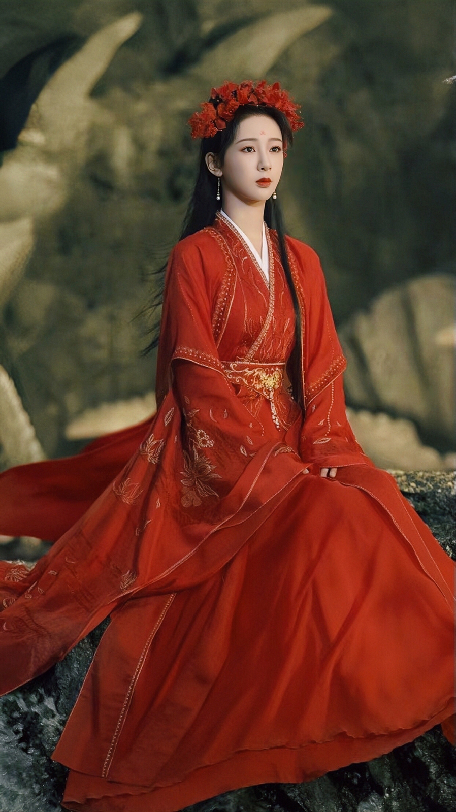

《长相思》是作家桐华创作的长篇小说
该剧改编自桐华的同名小说 讲述了流落大荒的皓翎王姬小夭历经百年颠沛之苦，在清水镇成为悬壶为生的玟小六， 机缘之下与玱玹、涂山璟、相柳、阿念、赤水丰隆等人上演了一场关于亲情、爱情、友情的纠葛故事。
《长相思》是“山经海纪”系列故事的完结篇，不仅有刻骨铭心的爱情, 更有家国天下的格局和濡沫共担的亲情和选择，谱就了一曲荡气回肠的相思曲。
在她的营造下，长相思是一种比相思更浓烈、更悠远的感情。
从作品里看，长相思就是爱却不能拥有。 如果说相爱是两个人的地久天长，那么，相思则是一个人的地老天荒。 得不到，忘不了，只能镌刻于心底掩藏于岁月，就像一杯只酿给自己喝的酒，用整个生命去品尝。
基本信息
演员介绍
-
相柳/防风邶演员 檀健次
他是大荒内数一数二的灵力高手， 因身为海底九头蛇妖而被称为九命相柳、海底妖王。 相柳为报答恩情担任神农义军将军，被共工收为义子，为王族世家及众多中原氏族所忌惮。 外表俊美妖异，风姿卓然；冰冷狠毒，冷酷无情，但有温柔重情的一面。 另一身份为防风氏二公子防风邶，随性散漫，游戏红尘，浪荡不羁。
-

小夭/玟小六演员 杨紫
流落大荒的高辛王姬玖瑶（小夭）历经百年颠沛之苦，不但失去了身份，也失去了容貌，在清水镇落脚，成为玟小六，悬壶为生，恣意不羁。 小夭为轩辕王姬妭与八世俊帝高辛少昊之女，实为轩辕妭与蚩尤之女。 先后与涂山璟和相柳相恋相惜，倾心于涂山璟，知心于相柳幻化的防风邶。 身为轩辕黄帝与中原西陵世家小姐嫘祖的外孙女、高辛少昊的女儿、玉山王母的徒弟，小夭决心帮助表哥颛顼赢得外祖父的继承权。 在通往权利的这条路上，他们彼此依靠，互相信任一起成长。
-
玱玹演员 张晚意
神族帝王，眉眼间有俯瞰苍生、不容置喙的威仪。 会平易近人、温和谈笑，也会翻脸无情，铁血冷酷。 黄帝四子昌意（仲意）和浊山昌仆之子，高辛少昊的徒弟，西陵玖瑶的表哥。 容貌出众、才华过人，性格沉稳，行事坚定。轩辕国君黄帝，高辛国君俊帝高辛少昊皆将帝位禅让于他。 打败了神农义军，统一天下。